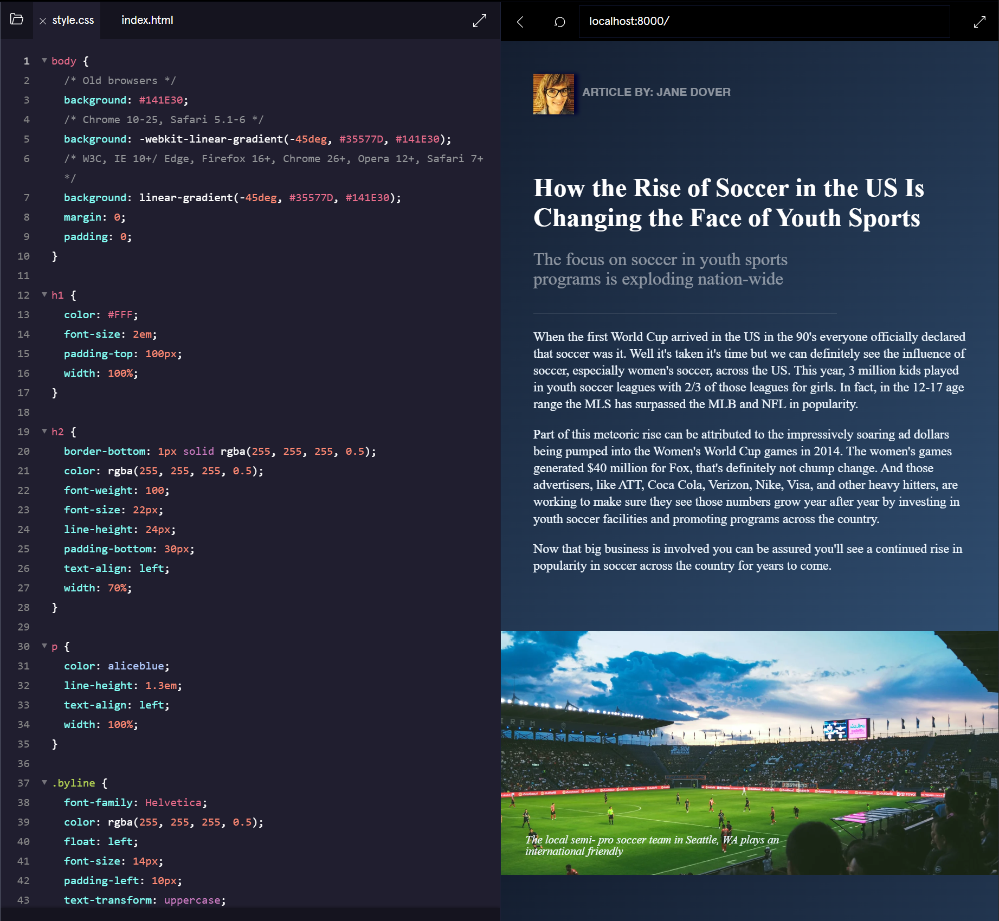
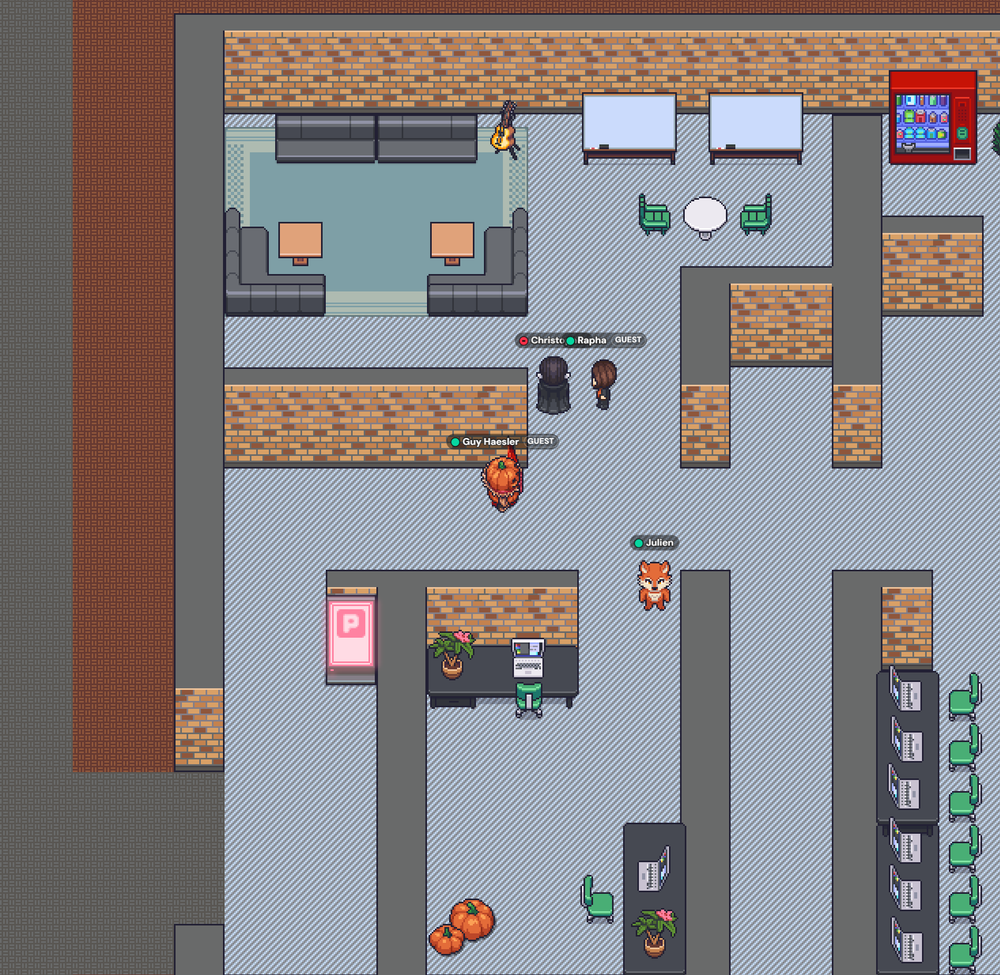
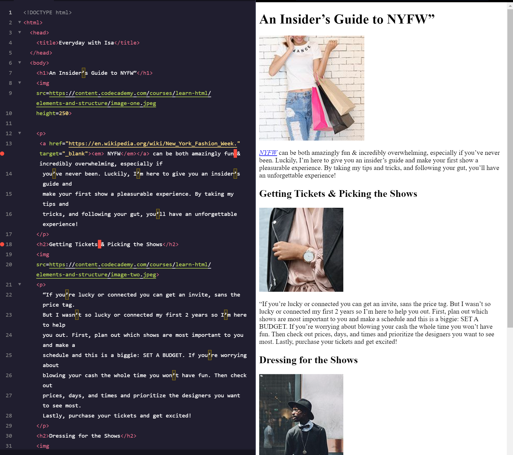
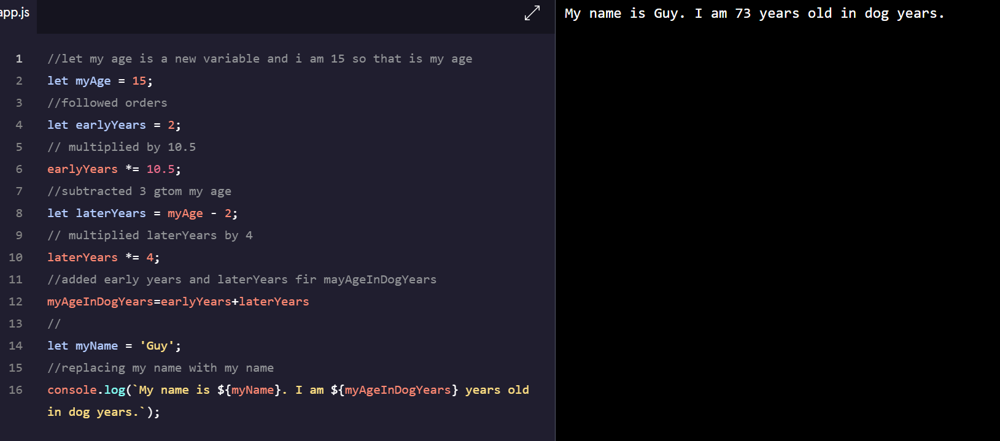

Ich bin dem Team beigetreten, und sie haben mir empfohlen, meine Fähigkeiten durch das Lernen von Codecademy zu verbessern, insbesondere mit Schwerpunkt auf HTML und CSS. HTML organisiert Webseiten mit Tags wie Überschriften und Absätzen.
Am Dienstag habe ich von zu Hause aus gearbeitet und auf Codecademy mehr über CSS gelernt. CSS ist so etwas wie der Stylist für Websites, der sie durch das Organisieren von Farben und Layouts ansprechend gestaltet. Das war eine hilfreiche und interessante Ergänzung zu meinem Arbeitstag im Homeoffice.
Letzten Donnerstag hatte ich einen Arbeitstag von zu Hause aus und habe meine Zeit damit verbracht, JavaScript auf Codecademy zu lernen. Im Vergleich zu HTML und CSS erscheint mir JavaScript verwirrender. HTML und CSS sind wie Bausteine für die Struktur und das Design einer Website. JavaScript hingegen ist etwas kniffliger, da es darum geht, die Website interaktiv und reaktionsschnell zu gestalten. Das Verstehen, wie man JavaScript verwendet, um auf einer Webseite Dinge geschehen zu lassen, ist für mich derzeit etwas herausfordernder.
In der ersten Woche meines Praktikums konzentrierte ich mich darauf, meine Fähigkeiten mithilfe von Codecademy zu verbessern, insbesondere in HTML und CSS. HTML strukturiert den Webinhalt, während CSS ihn für ein ansprechendes Erscheinungsbild gestaltet. Während der Remote-Arbeitstage tauchte ich in CSS ein und vertiefte mein Verständnis für das Gestalten von Elementen. Die Erkundung von CSS-Techniken war faszinierend, aber das Lernen von JavaScript war herausfordernder. Der Fokus von JavaScript auf Interaktivität schien im Vergleich zu HTML und CSS komplexer. Trotzdem gelang es mir, am letzten Freitag damit zu beginnen, eine Website zu erstellen. Mein Ziel bleibt es, meine Fähigkeiten in HTML, CSS und JavaScript zu verbessern, um ansprechendere Web-Erlebnisse zu schaffen.
Am Montag der zweiten Woche habe ich allen gezeigt, was ich am Wochenende gemacht habe. Ich habe sie an meinen Aktivitäten teilhaben lassen und sogar einige Details ergänzt, um meine Erlebnisse noch interessanter zu gestalten. Später, während unserer Mittagspause, haben wir beschlossen, in Weilburg eine Pause einzulegen und haben uns für Currywurst entschieden. Es war eine angenehme Unterbrechung des Tages, die uns allen die Möglichkeit gab, uns zu entspannen und gemeinsam eine leckere Mahlzeit zu genießen.
Am Dienstag arbeitete ich von zu Hause aus. Ich begann den Tag mit einigen lehrreichen Videos, um meine Arbeit besser zu verstehen. Danach widmete ich mich weiter der Verbesserung meiner Webseite, Schritt für Schritt.
Am Mittwoch habe ich damit verbracht, alle wichtigen Informationen für meine Webseite zu sammeln und zusammenzustellen. Ich habe darauf geachtet, dass alles gut organisiert und bereit war, um meine Webseite zu verbessern.
Am vergangenen Donnerstag habe ich von zu Hause aus gearbeitet. Während dieser Zeit habe ich mich darauf konzentriert, den CSS-Teil der Website zu verbessern und versucht, sie ansprechender aussehen zu lassen.
Am letzten Freitag bin ich frühzeitig nach Hause gegangen, weil ich krank war. Bevor ich gegangen bin, habe ich jedoch alle meine Unterlagen ausgefüllt und die Webseite veröffentlicht, damit andere sie sehen können.
Dies ist eine vollständige Liste aller Personen, mit denen ich zusammengearbeitet habe
Fotos von allem, was ich getan habe
Dies ist ein Bild von dem, was ich für CSS gemacht habe
Das ist Gather, Gather ist das, womit wir kommuniziert haben. Es ähnelt Zoom, ist aber ein Videospiel
Das habe ich mit HTML gemacht
Das habe ich mit Javascript gemacht